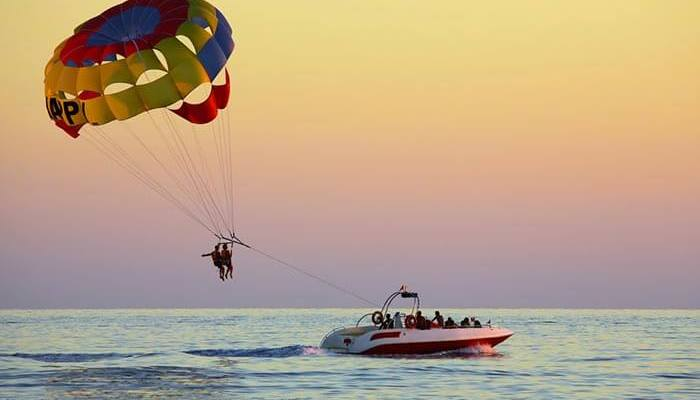
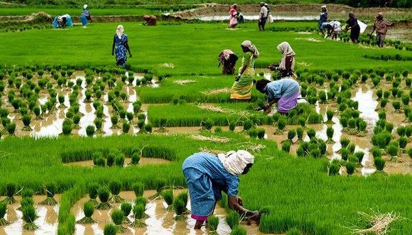
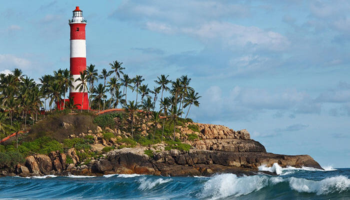
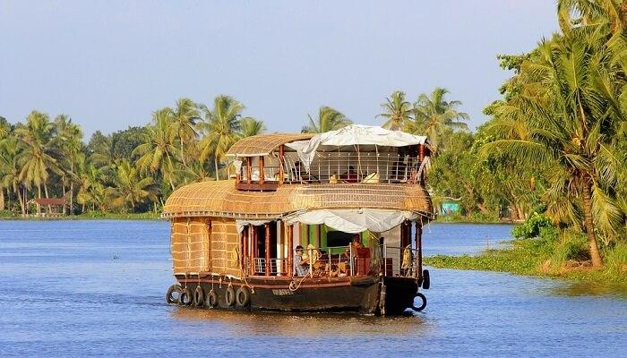
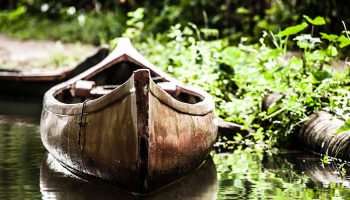
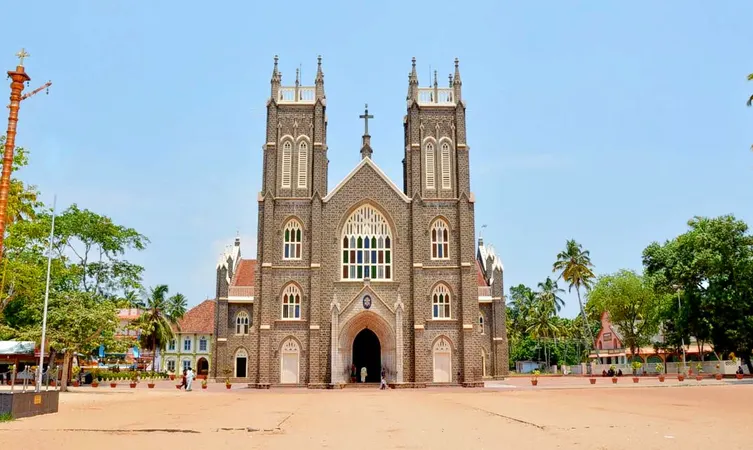
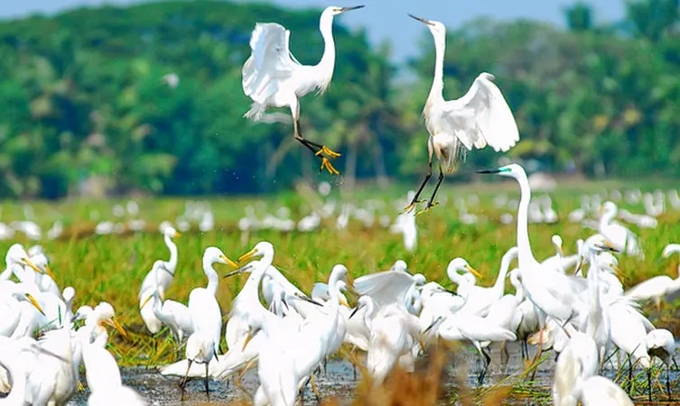

Alappuzha Beach
With dense palm groves, a beautiful park nearby, an ancient lighthouse, pristine sceneries, & a charming blend of the sea, canals, lagoons, and freshwater rivers all under one roof, the Alappuzha Beach is among the top places to visit in Alleppey.
Location:Alappuzha
Kuttanad
Popularly known in the South as the Rice Bowl of Kerala, the village of Kuttanad is one of the few places in the world where farming is carried out below sea level.
Location:Kerala
Alleppey Lighthouse
The Alappuzha Lighthouse, once a marker of the busiest ports and trade centres of Kerala, is now an important historical monument in Alleppey, and the first of its kind along the Arabian coast.
Location:CCSB Rd, Civil Station Ward, Alappuzha, Kerala 688012
Vembanad Lake
Spanning over several districts of the state, Vembanad Lake is the second largest lake of Kerala. It is also a major site of tourist attraction in Alleppey and has a number of resorts on its banks.
Location: Kerala
Canoes & Kayaks
Get into a canoe and you might actually feel like you’ve stepped into Venice. Row over the olive coloured waters in these long boats through narrow canals and experience the true elegance of Alleppey with your lover.
Location:Kerala
Krishnapuram Palace

It is one of the most popular museums in Alleppey. Built-in the 18th century by the king of Travancore, Anizham Thirunal Marthanda Varma, Krishnapuram Palace is quite popular for its vintage architecture and artistic murals.
Location:District Kayamkulam, Oachira Rd, Near, Krishnapuram, Kerala- 690533
St. Andrew's Basilica Arthunkal
The largest shrine of St. Sebastian in the whole world, this church is one of the most popular Alleppey tourist places.
Location:Arthunkal Basilica, Arthunkal P.O, Cherthala, Alappuzha, Kerala – 688524
Ambalapuzha Temple

Ambalapuzha Temple is one of the most rewarding places to visit in Alleppey. The temple is the oldest Krishna temples in Kerala and among the oldest in India too.
Location:Ambalappuzha, 14 km from Alappuzha
Champakulam

Champakulam is a captivating rural set up on the banks of Pampa River in Alappuzha district, with lush greens paddy fields and coconut trees forming a perfect picturesque, lying amidst the rice bowl of Kerala.
Location:Champakulam, Alappuzha.
Kumarakom Bird Sanctuary
Spread over 14 acres, the Kumarakom Sanctuary is situated on the banks of the beautiful Lake Vembanad. You can witness a wide variety of birds, from the Himalayas, Siberia and all around the world.
Location:Kavanattinkara, Kumarakom, Kerala – 686563.